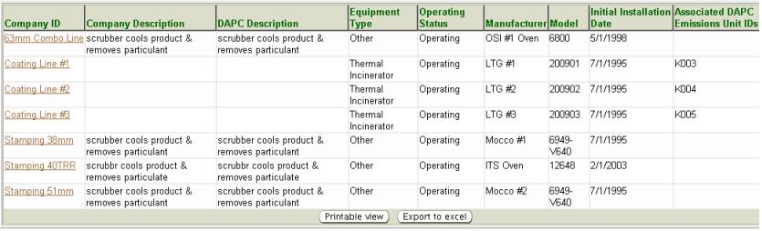

Previous Topic
Next Topic
| Facilities
|
Previous Topic |
Next Topic |
The system’s third-level menu, Control Equipment, of the Facility Profile page allows you to view a list of all control equipment located at a facility. This page also allows you to access a specific Control Equipment Information page, through a hyperlink for each piece of control equipment, where you can edit information pertaining to that control equipment. For more information on editing Control Equipment Information, refer to the Facility Tree Help page.
The following topics are contained in this help page:
The following datagrid of information will appear when you access the third-level menu, Control Equipment:

Information from the Control Equipment
list may be viewed,
exported to
Excel or printed. By clicking  you may view and print. By
clicking
you may view and print. By
clicking  a
pop-up will appear in which you must click Open in
order to view the
information in Excel.
a
pop-up will appear in which you must click Open in
order to view the
information in Excel.
Copyright © 1996, 2004, Oracle. All rights reserved.